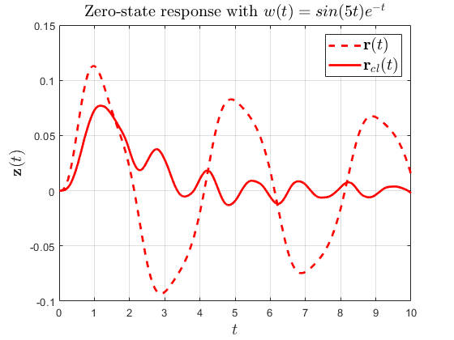

Contents
% DEMO2_volterra_operator_norm.m % See Chapter 11.2 of the manual for a description. % % This document illustrates how the norm of the Volterra integral operator % can be computed in PIETOOLS. % This example is also included in the paper (page 5, Demonstration 2) % link: https://arxiv.org/pdf/1910.01338.pdf % Volterra integral operator % T x (s) = int(x(\theta),d\theta,a,s) % Domain: s,theta \in [a,b] = [0,1] % Optimization Problem (LPI) % min γ, such that % T^*T ≤ γ
clc; clear; echo on %%%%%%%%%%%%%%%%%% Start Code Snippet %%%%%%%%%%%%%%%%%%
Define the operator (T x)(s) = int_{a}^{s} x(r) dr on [a,b]=[0,1]
a=0; b=1;
opvar Top;
Top.R.R1 = 1; Top.I = [a,b];
Solve the LPI Top'*Top - gam<=0
First, define dpvar gam and set up an optimization problem
vars = [Top.var1;Top.var2]; % Free vars in optimization problem (no optimization over these vars) dpvar gam; % Decision var in optimization problem (we will minimize gam) prob = sosprogram(vars,gam); % Next, set gam as objective function min{gam} prob = sossetobj(prob, gam); % Then, enforce the constraint Top'*Top-gam<=0 opts.psatz = 1; % Allow Top'*Top-gam>0 outside of interval [a,b] prob = lpi_ineq(prob,-(Top'*Top-gam),opts); % lpi_ineq(prob,Q) enforces Q>=0 % Finally, solve and retrieve the solution prob = sossolve(prob); operator_norm = sqrt(double(sosgetsol(prob,gam))); %%%%%%%%%%%%%%%%%% End Code Snippet %%%%%%%%%%%%%%%%%% echo off fprintf(['\n If successful, ',num2str(operator_norm),' is an upper bound on the norm of the Volterra integral operator.\n']) fprintf([' The exact operator norm of the Volterra integral operator is 2/pi=',num2str(2/pi),'.\n']);
%%%%%%%%%%%%%%%%%% Start Code Snippet %%%%%%%%%%%%%%%%%%
%%% Define the operator (T x)(s) = int_{a}^{s} x(r) dr on [a,b]=[0,1]
a=0; b=1;
opvar Top;
Top.R.R1 = 1; Top.I = [a,b];
%%% Solve the LPI Top'*Top - gam<=0
% First, define dpvar gam and set up an optimization problem
vars = [Top.var1;Top.var2]; % Free vars in optimization problem (no optimization over these vars)
dpvar gam; % Decision var in optimization problem (we will minimize gam)
prob = sosprogram(vars,gam);
% Next, set gam as objective function min{gam}
prob = sossetobj(prob, gam);
% Then, enforce the constraint Top'*Top-gam<=0
opts.psatz = 1; % Allow Top'*Top-gam>0 outside of interval [a,b]
prob = lpi_ineq(prob,-(Top'*Top-gam),opts); % lpi_ineq(prob,Q) enforces Q>=0
% Finally, solve and retrieve the solution
prob = sossolve(prob);
Size: 51 31
The coefficient matrix is not full row rank, numerical problems may occur.
SeDuMi 1.3 by AdvOL, 2005-2008 and Jos F. Sturm, 1998-2003.
Alg = 2: xz-corrector, Adaptive Step-Differentiation, theta = 0.250, beta = 0.500
Put 1 free variables in a quadratic cone
eqs m = 31, order n = 13, dim = 53, blocks = 4
nnz(A) = 130 + 0, nnz(ADA) = 933, nnz(L) = 482
it : b*y gap delta rate t/tP* t/tD* feas cg cg prec
0 : 2.30E+00 0.000
1 : 1.72E+00 5.88E-01 0.000 0.2562 0.9000 0.9000 0.49 1 1 2.4E+00
2 : 7.92E-01 1.63E-01 0.000 0.2776 0.9000 0.9000 1.24 1 1 6.9E-01
3 : 5.31E-01 3.84E-02 0.000 0.2349 0.9000 0.9000 1.43 1 1 1.4E-01
4 : 4.71E-01 8.39E-03 0.000 0.2188 0.9000 0.9000 1.20 1 1 2.8E-02
5 : 4.69E-01 2.16E-03 0.000 0.2568 0.9000 0.9000 0.83 1 1 7.3E-03
6 : 4.69E-01 6.11E-04 0.000 0.2834 0.9000 0.9000 0.70 1 1 2.1E-03
7 : 4.70E-01 1.73E-04 0.000 0.2831 0.9000 0.9000 0.73 1 1 7.0E-04
8 : 4.70E-01 5.89E-05 0.000 0.3407 0.9000 0.9000 0.69 1 1 2.9E-04
9 : 4.71E-01 2.55E-05 0.000 0.4320 0.9000 0.9000 0.62 1 1 1.6E-04
10 : 4.71E-01 9.82E-06 0.000 0.3858 0.9000 0.9000 0.69 1 1 7.3E-05
11 : 4.71E-01 4.71E-06 0.000 0.4795 0.9000 0.9000 0.52 1 1 4.8E-05
12 : 4.71E-01 1.71E-06 0.000 0.3639 0.9000 0.9000 0.66 1 1 2.1E-05
13 : 4.72E-01 7.35E-07 0.000 0.4292 0.9000 0.9000 0.49 1 1 1.2E-05
14 : 4.72E-01 2.72E-07 0.000 0.3700 0.9000 0.9000 0.61 1 1 5.7E-06
15 : 4.72E-01 1.18E-07 0.000 0.4338 0.9000 0.9000 0.44 1 1 3.6E-06
16 : 4.72E-01 4.28E-08 0.000 0.3623 0.9000 0.9000 0.59 1 1 1.6E-06
17 : 4.72E-01 1.78E-08 0.000 0.4167 0.9000 0.9000 0.43 1 1 9.8E-07
18 : 4.72E-01 6.48E-09 0.000 0.3637 0.9000 0.9000 0.57 1 2 4.5E-07
19 : 4.72E-01 2.71E-09 0.000 0.4187 0.9000 0.9000 0.42 1 2 2.8E-07
20 : 4.72E-01 9.80E-10 0.000 0.3611 0.9000 0.9000 0.56 1 2 1.3E-07
21 : 4.72E-01 1.63E-10 0.000 0.1663 0.7177 0.9000 0.41 1 2 7.7E-08
22 : 4.72E-01 5.16E-11 0.000 0.3164 0.9000 0.9141 0.56 1 2 3.1E-08
23 : 4.72E-01 1.90E-11 0.000 0.3694 0.9049 0.9000 0.50 2 2 1.6E-08
24 : 4.72E-01 8.87E-12 0.000 0.4657 0.6531 0.9000 0.45 2 2 1.1E-08
25 : 4.72E-01 3.06E-12 0.000 0.3450 0.9000 0.9197 0.62 2 2 4.7E-09
iter seconds digits c*x b*y
25 0.2 5.4 4.7194587777e-01 4.7194755947e-01
|Ax-b| = 8.0e-09, [Ay-c]_+ = 3.0E-10, |x|= 6.2e+02, |y|= 4.3e+03
Detailed timing (sec)
Pre IPM Post
1.800E-02 1.310E-01 0.000E+00
Max-norms: ||b||=1, ||c|| = 1,
Cholesky |add|=0, |skip| = 15, ||L.L|| = 1.11599e+08.
Residual norm: 8.0042e-09
iter: 25
feasratio: 0.6151
pinf: 0
dinf: 0
numerr: 0
timing: [0.0180 0.1310 0]
wallsec: 0.1490
cpusec: 0.1875
operator_norm = sqrt(double(sosgetsol(prob,gam)));
%%%%%%%%%%%%%%%%%% End Code Snippet %%%%%%%%%%%%%%%%%%
echo off
If successful, 0.68698 is an upper bound on the norm of the Volterra integral operator.
The exact operator norm of the Volterra integral operator is 2/pi=0.63662.
